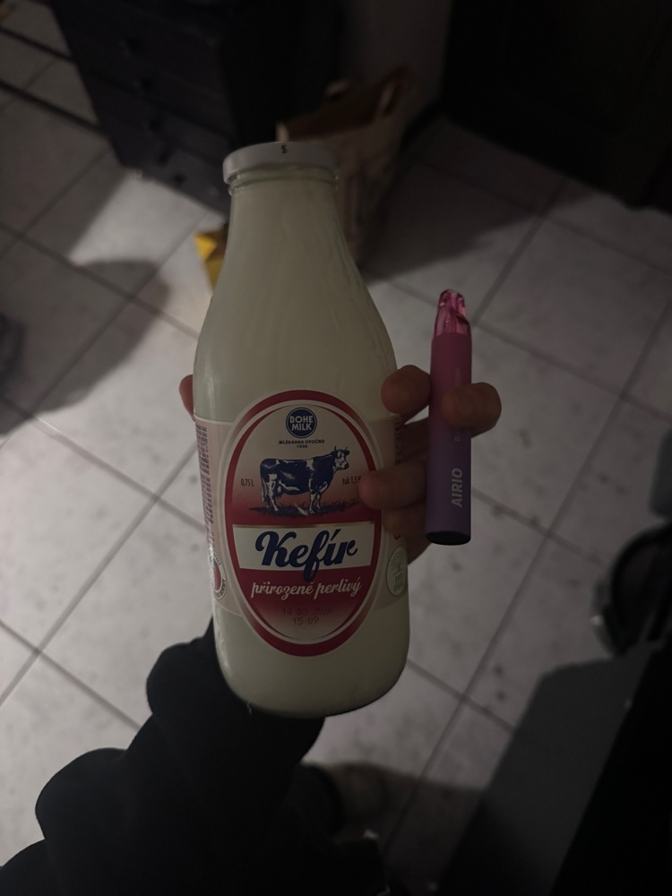

Столкновение науки, традиции и современного быта
Выбрать здоровую овцу. Перерезать горло, спустить кровь в подготовленную емкость.
Аккуратно извлечь тонкий кишечник длиной ~40 см. Не повредить слизистую.
Тупой стороной ножа соскоблить внутренний слой кишечника. Полученную массу — закваску.
Закваску поместить в козий бурдюк с молоком. Подвесить на солнце на 24-48 часов.
